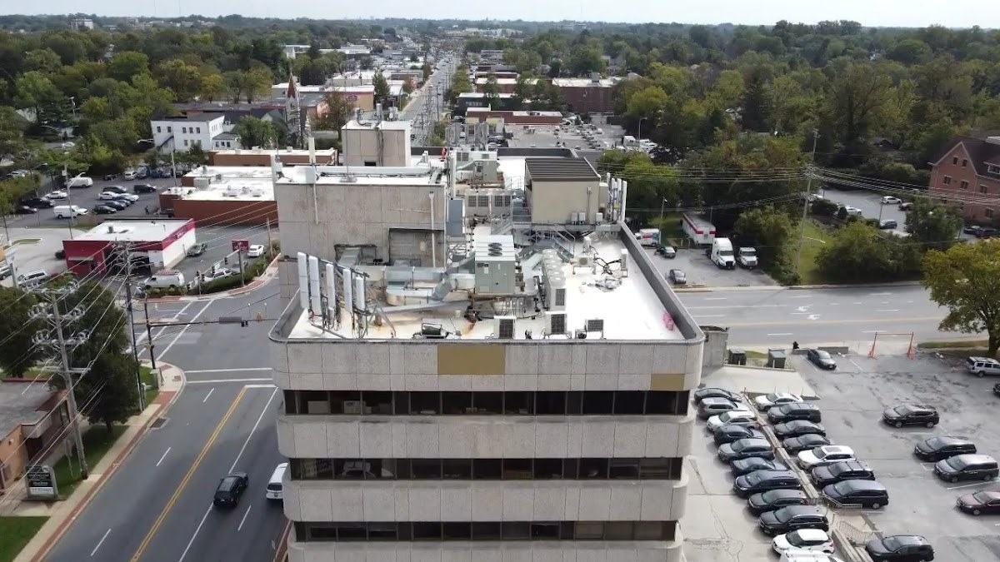
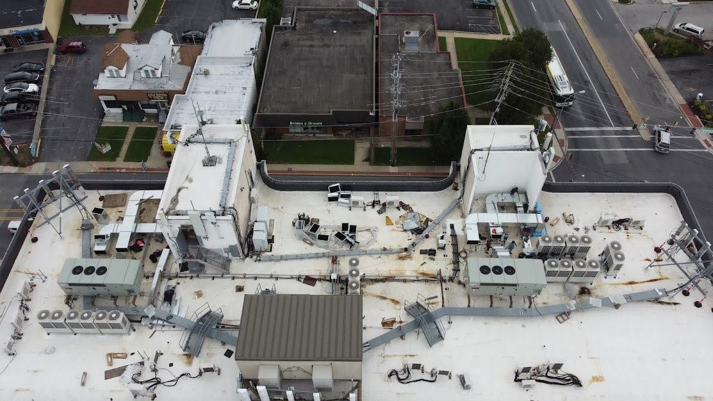
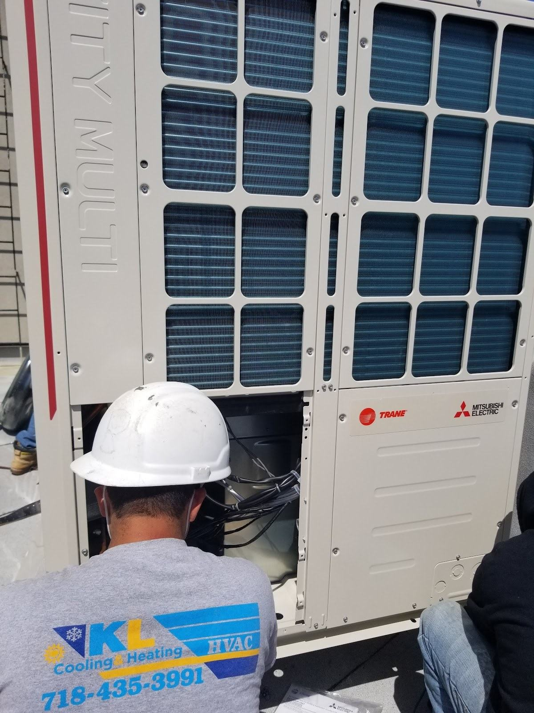
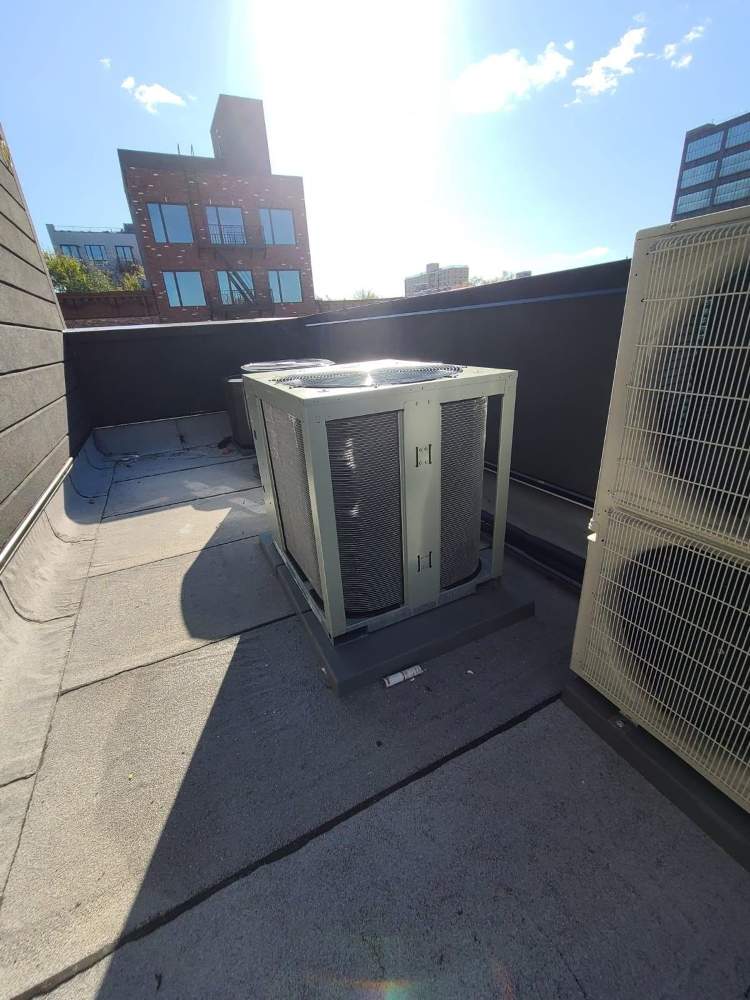

UNIT / 01Commercial rooftop cooling
Share the rooftop equipment and your cooling question.
Discuss equipment ↗
AREA / BOROUGH PARK · BROOKLYN
Commercial rooftop cooling, VRF and multi-zone systems, installation and service.
Call KL Cooling ↗Text your question ↗01 / EQUIPMENT & SERVICES

UNIT / 01Share the rooftop equipment and your cooling question.
Discuss equipment ↗
UNIT / 02Tell us about the system and the zones involved.
Discuss equipment ↗Describe the equipment and the installation or service request.
Discuss equipment ↗
UNIT / 04Share the system type and what you noticed.
Discuss equipment ↗02 / FIRST CONTACT
Tell us about the equipment and issue.
Discuss site conditions, access and scope.
Ask questions before choosing a next step.
03 / PHOTO VIEWS
04 / SERVICE AREA
Ask about cooling, heating and HVAC systems in Borough Park. Contact KL to discuss your location and equipment.
Discuss your location ↗05 / QUESTIONS
Call or send a message with the issue, the equipment involved and your neighborhood. Ask what information is needed to discuss an estimate.
If you smell gas, suspect carbon monoxide or see smoke, leave the building and call 911 or your gas utility from outside. For a leak or loss of heat, avoid hazards and seek appropriate help; do not rely on this website in an emergency.
Ask about service in Borough Park, Brooklyn. Contact the business to confirm the location and scope of your request.
Include your name, a way to reach you, your neighborhood and a short description of the issue. You can attach a clear equipment photo in your own messaging or email app. Avoid sensitive personal information.